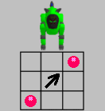

|
|
DogsLife Games
Contents of this website are freeware and/or copyrighted material, and may not be sold
under any circumstances.
Email: dogsbody@dogsbodynet.com
Home:
https://dogsbodynet.com
|
DogsLife likes to have fun, and knows three games to aid in
that pursuit:
You interact with AIBO through its sensors or using color objects
(depending on the game). |
AIBO
raises both
rear paws, to allow you to pick a
game. Touch the rear paws to make a selection.
AIBO
won't wait long though, and picks his own favorite if you
delay. Shown below is the LED-to-game chart (for each
model):
On the 210, the face LED's indicate the game. For the 220, the
visor. For the 310, the horn.
|
| Rock
Paper Scissors |
Tic-Tac-Toe
|
Touch
4
|
|
|
| Playing Rock-Paper-Scissors: |
- The Game. Rock-Paper-Scissors is
normally played with two people.
A round starts, and each person chooses either rock (represented with a
fist), paper (hand flat), or scissors (with fingers). If
both
people have the same choice, its a tie - no winner. If
someone
picks rock, and the other paper, paper wins (paper wraps
rock).
If someone picks paper, and the other scissors, scissors win (scissors
cut paper). If someone picks scissors, and the other rock,
rock wins (rock dulls scissors).
|
- AIBO's Movements. AIBO
represents "Rock" with a little circle of his left paw.
"Paper" is waving both arms side-to-side. "Scissors" is an
up/down arm movement in a cutting motion. A little three
tick
timer lets you know when a round is starting. There are two ways
to play: either with colored objects, or using the head sensors.
|
- Playing with color objects.
The pink ball represents a rock. You need something bright
blue for paper.
Something yellow or green for scissors. Show the
object (in good bright
light), and AIBO responds accordingly.
|
- Playing using head sensors. This
is a simple mode.
Press AIBO 's head sensor when he wins (push head forward on
310). Rub the chin sensor
on a tie (push head back on 310). Do nothing and eventually
AIBO figures he lost.
Keep color objects out of view, otherwise AIBO might respond to those
first.
|
- Ending the game. AIBO decides when
he has had enough (usually
after winning or losing 3-6 times). Touching the back
sensor
or giving a voice command will end the game also.
|
|
- The Game.
The game is played on 3x3 board of nine squares. Players use "X"
and "O"'s to mark moves. Win by getting three of your marks in a
row before your opponent, horizontally, vertically or
diagonally.
|
- Make a Game Board. You need a
tic-tac-toe board 15 to 20 inches (38 to 50mm) on a side.
Drawing one on a large piece of paper/cardboard/carpet works
fine. Center the board in front of AIBO straight on.
|
- Teach AIBO your Game Board.
AIBO must learn the size of your game board.
- Move the ball to one corner (make sure AIBO is
tracking it). The pause LED flashes slowly.
- Press the head sensor once. AIBO
acknowledges with a beep.
- Move the ball to the opposite
corner diagonally. AIBO follows the ball, flashing the
pause LED faster,
and gets "happy" once the board is considered big enough.
- Press the head sensor a second time. If AIBO
isn't happy on the
second head-press, the board isn't large enough and AIBO quits the game.
|
 |
- Ready to Play! AIBO decides who
goes first, and either points at himself or you, with both
paws.
|
- AIBO's Turn. AIBO uses a front leg
to indicate his move. Pointing high right (AIBO's right)
means the furthest square from AIBO on his right. Pointing
low left means the nearest square on the left. Place a
marker where AIBO moved (so you can remember).
|
- Your Turn.
Show AIBO your move by
moving the pink ball. Make sure AIBO is tracking the ball.
On the 210 or 220, AIBO indicates where he thinks the ball is with an
eye pattern. One eye means a left or right column, both
eyes is
the center column. If AIBO turns on all eye LED's (or
the orange horn for 310), AIBO thinks the ball is over an occupied
square. Press the head-sensor when you've made your
choice. Place a marker where you moved.
|
- Ending the game. AIBO decides when he's
had enough (usually
after winning or losing 3-6 times). Touching the back
sensor
or giving a voice command will end the game also.
|
|
- The Game. Touch-4 is a memory game
(for people, not AIBO's). :-) AIBO displays an ever
longer face/visor/horn LED pattern sequence. You must
remember the sequence, and repeat it using AIBO's four foot sensor
pads. If you get 20 in a row, you win!
This game is harder on the 310 than the 210/220.
|
- Ready to Play! AIBO starts with a three
long LED sequence. Once you successfully repeat the
pattern, AIBO does a little victory dance for you, then gives four
LED's (the first three, plus one more).
|
- Faster 'n Faster! As you get to longer
LED sequences, AIBO presents the LED's more and more
quickly. You have to work harder to keep up.
|
- Ending the game. AIBO decides when he
has had enough (usually
after you miss the pattern 3-6 times). Touching the back
sensor
or giving a voice command will end the game also.
|
|
|